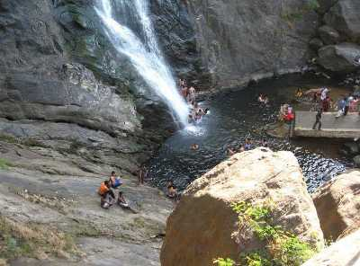
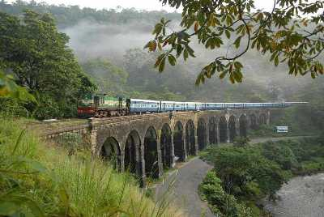
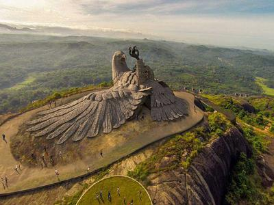

Kollam
Palaruvi Waterfalls
Palaruvi Falls, cascading downstream from the height of 300 ft, is one of the prime attractions in Kutrallam or as some call it Courtallam, Tamil Nadu. Owing to its height; it is the 32nd highest fall in our country. The name Palaruvi means 'Stream of Milk' in the regional language. Ironically it seems to be a glittering stream of milk as it flows down. Hence, the beauty of this fall stands unimaginable till witnessed with own eyes. The roaring sounds of the fall stand in stark contrast to the silence of the forests and mist-kissed mountains around it.
Punalur
Punalur, lying along the border of Tamil Nadu and Kerala in the district of Kollam, derives its name from two words one Tamil and one Malayalam. Tamil word 'punal' means water and Malayalam word 'ooru' means place together making Punalur the place of water. Indeed Kallada flows right through the heart of the city with the famous suspension bridge hanging over it, stretching for 400 metres across its width. Panalur is known as "Pepper Village of Kerala" and is also houses a major Paper Mill established in 1850's.
Jatayu Earth's Centre
Jatayu Nature Park is a rock-themed park which got opened on November 25, 2017. Built to promote mythology and adventure tourism, the tourism centre boasts of 6D theatre, a digital audio-visual room, cable car and ayurvedic cave resort. It is also home to umpteen adventure activities including paintball, laser tag, archery, bouldering, rock climbing, air-rifle shooting etc. The primary attraction of the park, however, is the world's largest stone-cut bird sculpture replicating Jatayu, the mythical bird from Ramayana.
Mahatma Gandhi Beach and Park

Lying at a distance of just 2 km from kollam town is Mahatma Gandhi Beach and Park which is quite popular as a picnic spot among locals and tourists. The park was introduced in year 1961 and offers an ideal location for mindless strolling along the shore.